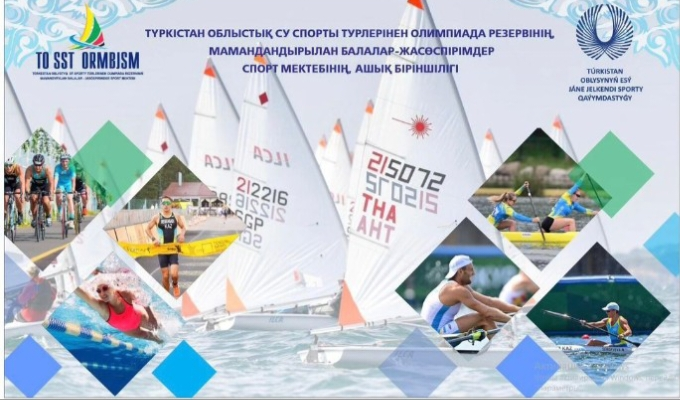

О нас
Добро пожаловать на наш сайт, посвященный парусному спорту! Мы команда энтузиастов, которые живут и дышат парусным спортом. Наша миссия — популяризация парусного спорта и предоставление качественных услуг для любителей этого увлекательного вида спорта.
Наша история
Наша организация была основана в 2010 году небольшой группой друзей, которые обожают море и парусные гонки. С тех пор мы выросли и стали одной из ведущих парусных школ в регионе, обучая сотни студентов каждый год.
Наши ценности
- Профессионализм: Мы стремимся предоставлять высококачественные услуги и обучение, используя передовые методики и оборудование.
- Безопасность: Безопасность наших студентов и участников — наш главный приоритет.
- Страсть: Мы любим то, что делаем, и стремимся передать эту страсть нашим ученикам и клиентам.
Наша команда
У нас работает команда опытных инструкторов и специалистов, каждый из которых имеет многолетний опыт в парусном спорте и обучении. Наши инструкторы сертифицированы международными организациями и регулярно проходят повышение квалификации.

Свяжитесь с нами
Если у вас есть вопросы или вы хотите записаться на занятия, пожалуйста, напишите нам на parusnuisportlenger@gmail.com.